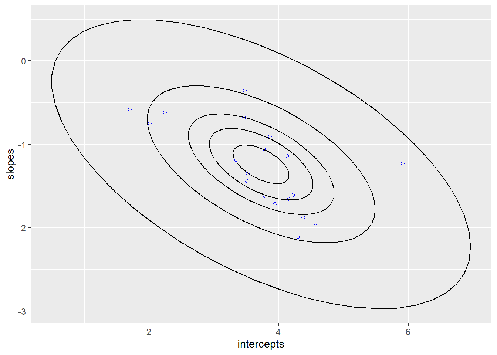
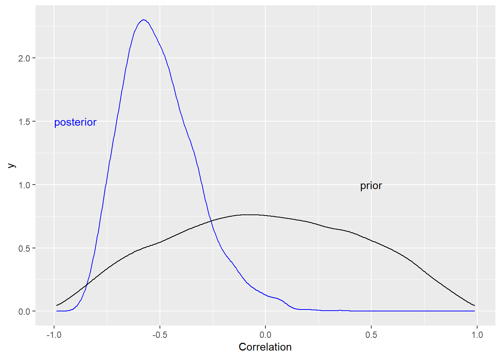
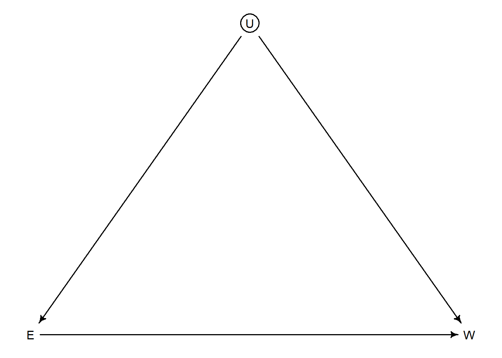
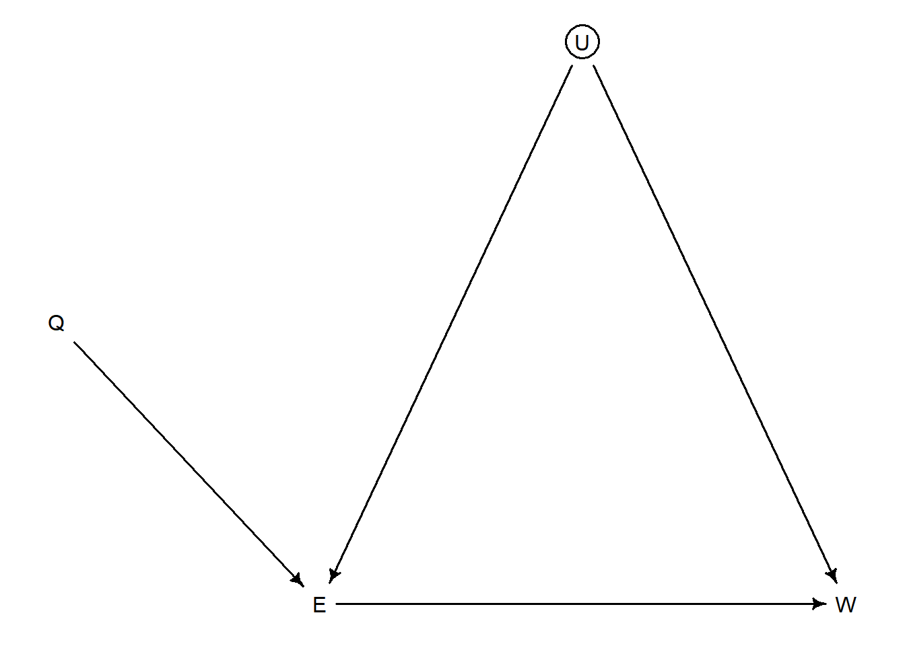
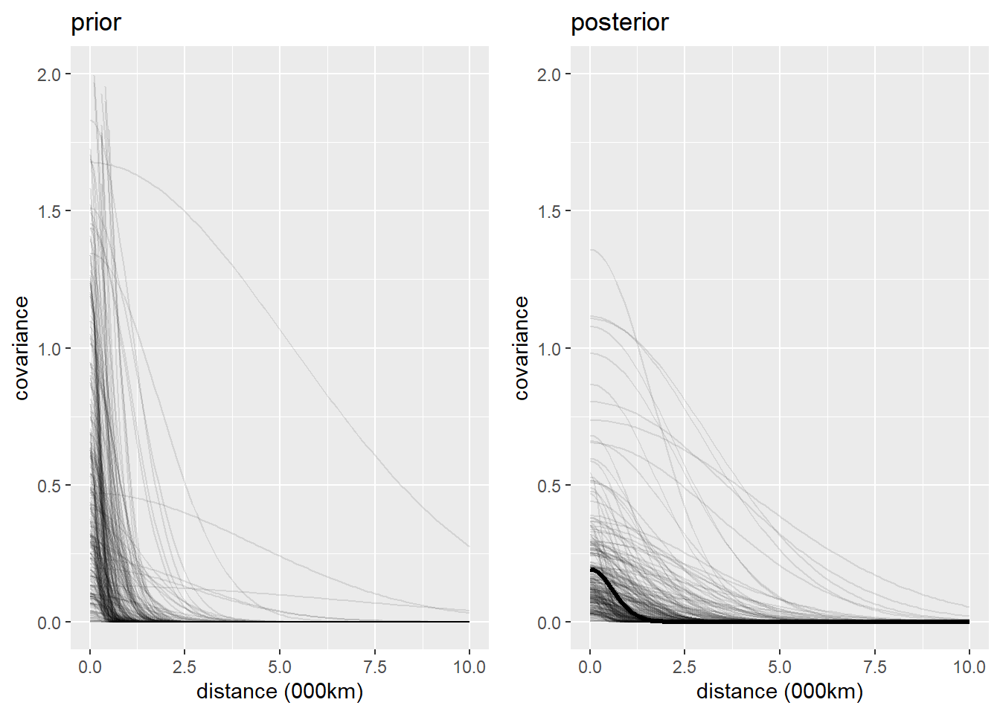

Chapter 14 Adventures in Covariance
14.1 Chapter Notes
Varying Slopes by Construction
The chapter introduces a simulation exercise to explain varying effects models. We have a population of cafes, and are interested in waiting times. As in the previous chapter, we’ll allow intercepts to vary, with partial pooling across cafes. But we’re also interested in the effect of the predictor afternoon (i.e. whether you are getting coffee in the morning or afternoon). We want to also allow the slopes to vary, and to pool across cafes. This is a varying effects strategy.
More than this, the key addition here is that we also want to allow our intercepts and slopes to covary, pooling information across intercepts and slopes.
We’re going to use a multi-variate normal distribution to generate a population of cafes. We need a vector of means and a variance-covariance matrix:
a <- 3.5
b <- (-1)
sigma_a <- 1
sigma_b <- 0.5
rho <- (-0.7)
Mu <- c(a,b)Where
- \(a\) is average morning wait time
- \(b\) is average difference in wait time between morning and afternoon
- we have the standard deviations in the intercepts and slopes
- \(\rho\) is correlation between intercepts and slopes
- \(\mu\) is the vector of means
We could build the variance covariance matrix directly it should look like this:
\[ \begin{pmatrix} \sigma_\alpha^2 & \sigma_\alpha \sigma_\beta \rho \\ \sigma_\alpha \sigma_\beta \rho & \sigma_\beta^2 \end{pmatrix} \]
Instead we decompose it, in a way that treats the standard deviations and correlations separately, because this will become useful in setting priors
sigmas <- c(sigma_a,sigma_b)
Rho <- matrix( c(1,rho,rho,1) , nrow=2 )
Sigma <- diag(sigmas) %*% Rho %*% diag(sigmas)i.e.
\[ \begin{pmatrix} \sigma_\alpha^2 & \sigma_\alpha \sigma_\beta \rho \\ \sigma_\alpha \sigma_\beta \rho & \sigma_\beta^2 \end{pmatrix} = \begin{pmatrix} \sigma_\alpha & 0 \\ 0 & \sigma_\beta \end{pmatrix} \begin{pmatrix} 1 & \rho \\ \rho & 1 \end{pmatrix} \begin{pmatrix} \sigma_\alpha & 0 \\ 0 & \sigma_\beta \end{pmatrix} \]
That’s the setup, here’s the simulation part, with a plot of the data, that shows how the intercepts and slopes covary.
N_cafes <- 20
set.seed(5)
vary_effects <- as_tibble(mvrnorm(N_cafes, Mu, Sigma))%>%
rename(intercepts = V1, slopes = V2)
vary_effects <- bind_cols(cafe = 1:N_cafes,vary_effects)
plot_cafe_data <- ggplot(data = vary_effects, aes(x = intercepts, y = slopes))+
geom_point(col = "blue", shape = 1)
for (l in c(0.1,0.3,0.5,0.8,0.99)){
plot_cafe_data <- plot_cafe_data +
stat_ellipse(type = "norm",level = l)}
plot_cafe_data
Each point is a cafe.
We now simulate 10 visits to each cafe:
set.seed(22)
data_cafe <- tibble( cafe= rep( 1:N_cafes , each=10 ),
afternoon=rep(0:1,10*N_cafes/2))%>%
left_join(vary_effects, by = "cafe")%>%
mutate(wait = rnorm(200,mean = intercepts + slopes * afternoon , sd = 0.5 ))Now we fit a model to see if we can get back the data generating process. The model looks like this:
\[ \begin{aligned} W_i &\sim \text{Normal}(\mu_i, \sigma) \\ \mu_i &= \alpha_{\text{CAFE}[i]} + \beta_{\text{CAFE}[i]}A_i \\ \\ \begin{bmatrix} \alpha_{\text{CAFE}[i]} \\ \beta_{\text{CAFE}[i]} \end{bmatrix} &\sim \text{MVNormal}\left( \begin{bmatrix} \alpha \\ \beta \end{bmatrix} , S \right) && \text{population of varying effects}\\ \\ S &= \begin{pmatrix} \sigma_\alpha & 0 \\ 0 & \sigma_\beta \end{pmatrix} R \begin{pmatrix} \sigma_\alpha & 0 \\ 0 & \sigma_\beta \end{pmatrix} && \text{construct covariance matrix} \\ \\ \alpha &\sim \text{Normal}(5,2) && \text{prior for average intercept}\\ \beta &\sim \text{Normal}(-1,0.5) && \text{prior for average slope} \\ \sigma &\sim \text{Exponential}(1) && \text{prior std dev within cafes} \\ \sigma_\alpha &\sim \text{Exponential}(1) && \text{prior std dev among intercepts}\\ \sigma_\beta &\sim \text{Exponential}(1) && \text{prior std dev among slopes}\\ R &\sim \text{LKJcorr}(2) && \text{prior for correlation matrix} \end{aligned} \]
After running, we plot the posterior correlation between intercepts and slopes. In our simulation data, there is a negative correlation: busy cafes have larger differences in wait times between morning and afternoon. Our model reflects this:

Revisit: The book includes a section on constructing a model with more than two varying effects, using the chimp example. This section is especially useful because it demonstrates a non-centered parameterisation for this kinds of model using Cholesky decomposition.
Instruments and Causal Designs
We return to the problem of estimating the effect of education on wages. We expect there to be some unobserved factors that may confound inference:

We can’t close the backdoor path, because we have not observed U. But we might be able to use an instrumental variable to make inferences. An instrumental variable \(Q\) must be:
- Independent of U
- Not independent of E
- Q must have no influence on W except through E
The book notes that 1 and 3 in particular, are not testable, and can be strong assumptions.
Assuming we have an instrumental variable, our DAG now looks like:

How do we use \(Q\). The book suggesting thinking of Q in this example as the quarter of the year a person is born in, which has an influence on how much education a person receives. The chapter simulates some data:
set.seed(73)
N <- 500
U_sim <- rnorm( N )
Q_sim <- sample( 1:4 , size=N , replace=TRUE )
E_sim <- rnorm( N , U_sim + Q_sim )
W_sim <- rnorm( N , U_sim + 0*E_sim )
data_edu_sim <- list(W=standardize(W_sim) ,
E=standardize(E_sim) ,
Q=standardize(Q_sim) )You can see that in the simulated data, education has no causal effect on wages. The first model attempted is a straightforward regression of wages on education:
\[ \begin{aligned} W &\sim N(\mu_i, \sigma)\\ \mu_i &= \alpha_W + \beta_{EW}E\\ \alpha_W &\sim N(0,0.2)\\ \beta_{EW} &\sim N(0,0.5)\\ \sigma &\sim \text{Exp}(1) \end{aligned} \]
The model believes that education leads to higher wages (you can see that \(b_{EW}\) is very far from 0):
## mean sd 5.5% 94.5% n_eff Rhat4
## aW -0.0005288119 0.03972125 -0.06551111 0.06268503 4420.966 0.9998203
## bEW 0.3969786620 0.04207471 0.32912801 0.46241297 4023.615 0.9995759
## sigma 0.9177689387 0.02926500 0.87166634 0.96589663 4274.570 0.9998091Next we add \(Q\) as a predictor:
\[ \begin{aligned} W &\sim N(\mu_i, \sigma)\\ \mu_i &= \alpha_W + \beta_{EW}E + \beta_{QW}Q\\ \alpha_W &\sim N(0,0.2)\\ \beta_{EW} &\sim N(0,0.5)\\ \beta_{QW} &\sim N(0,0.5)\\ \sigma &\sim \text{Exp}(1) \end{aligned} \]
And the results are worse:
## mean sd 5.5% 94.5% n_eff Rhat4
## aW 0.001225136 0.03729397 -0.05886653 0.05983202 3832.831 1.001327
## bEW 0.634945642 0.04612737 0.56244349 0.70667009 2673.269 1.000318
## bQW -0.404044928 0.04540413 -0.47634060 -0.33201980 2716.394 1.000414
## sigma 0.857273180 0.02738017 0.81479490 0.90206280 3654.169 1.000256The estimated effect of education on wages is even larger, and the model also thinks that \(Q\) is correlated with wages even when \(E\) is included in the model. We know from the simulation that \(Q\) has no effect on wages except through E; the error comes from the fact that E is a collider of \(Q\) and \(U\).
The chapter goes on to describe how \(Q\) should be used, starting by writing the generative version of the model (assuming the DAG).
According to the DAG, wages are a function of education, and our unobserved confound:
\[ \begin{aligned} W_i &\sim N(\mu_{W,i},\sigma_W)\\ \mu_{W,i} &= \alpha_W + \beta_{EW}E_i + U_i \end{aligned} \] Education is a function of quarter of birth and the unobserved confound:
\[ \begin{aligned} E_i &\sim N(\mu_{E,i},\sigma_E)\\ \mu_{E,i} &= \alpha_E + \beta_{QE}Q_i + U_i \end{aligned} \] We assume even numbers of people born in each quarter:
\[ Q \sim \text{Categorical}([0.25,0.25,0.25,0.25]) \] For now we assume U is normally distributed with mean 0 and standard deviation 1:
\[ U_i \sim N(0,1) \]
In order to create a statistical model out of all of this, we use a multivariate linear model:
\[ \begin{aligned} \begin{pmatrix} W_i \\ E_i \end{pmatrix} &\sim \text{MVNormal}(\begin{pmatrix} \mu_{W,i} \\ \mu_{E,i} \end{pmatrix},S)\\ \mu_{W,i} &= \alpha_W + \beta_{EW}E_i \\ \mu_{E,i} &= \alpha_E + \beta_{QE}Q_i \end{aligned} \] What’s happening here is that wages and education are both simultaneously outcomes of our regression. The \(S\) here is analogous to \(\sigma\) in the above simple linear regressions - it’s meant to capture residual correlations between pairs of \(W\) and \(E\) (e.g. from the action of our unobserved confound).
Here are the results:
## mean sd 5.5% 94.5% n_eff Rhat4
## aE 0.0010056517 0.03553324 -0.05496976 0.05860987 2883.136 1.0003532
## aW 0.0007991066 0.04487617 -0.07018863 0.07286133 2687.905 1.0005700
## bQE 0.5886988233 0.03526074 0.53321709 0.64673715 2420.864 0.9997788
## bEW -0.0472580413 0.07614137 -0.16898210 0.07509664 2065.612 1.0002730
## Rho[1,1] 1.0000000000 0.00000000 1.00000000 1.00000000 NaN NaN
## Rho[1,2] 0.5395469192 0.05337246 0.45012197 0.62061797 2051.787 0.9996464
## Rho[2,1] 0.5395469192 0.05337246 0.45012197 0.62061797 2051.787 0.9996464
## Rho[2,2] 1.0000000000 0.00000000 1.00000000 1.00000000 NaN NaN
## Sigma[1] 1.0224607505 0.04648751 0.95180275 1.10091265 2279.323 0.9996041
## Sigma[2] 0.8086648767 0.02530651 0.77065219 0.85006606 3275.550 0.9995571The model now correctly believes that the causal effect of education on wages is close to zero. The residual correlation between wages and education, \(\rho_{1,2}\), is positive, which reflects the influence of \(U\).
Endnotes 208 and 209 point to some real-world attempts to use instrumental variables for inference.
Revisit: The chapter includes a short discussion of the front-door criterion, which I first read about in Judea Pearl’s Book of Why. Then there is a second example that uses a custom covariance matrix. This time to make inferences about social relations in a community in Nicaragua.
Continuous Categories and the Gaussian Process
The challenge of this section is to extend our application of varying effects from unordered categories to continuous variables. To do this the chapter introduces Gaussian process regression. The chapter returns to the chapter 11 data set of tool use in historic Oceanic societies, this time adding a measure of geographic distance to the model.
## Ml Ti SC Ya Fi Tr Ch Mn To Ha
## Malekula 0.0 0.5 0.6 4.4 1.2 2.0 3.2 2.8 1.9 5.7
## Tikopia 0.5 0.0 0.3 4.2 1.2 2.0 2.9 2.7 2.0 5.3
## Santa Cruz 0.6 0.3 0.0 3.9 1.6 1.7 2.6 2.4 2.3 5.4
## Yap 4.4 4.2 3.9 0.0 5.4 2.5 1.6 1.6 6.1 7.2
## Lau Fiji 1.2 1.2 1.6 5.4 0.0 3.2 4.0 3.9 0.8 4.9
## Trobriand 2.0 2.0 1.7 2.5 3.2 0.0 1.8 0.8 3.9 6.7
## Chuuk 3.2 2.9 2.6 1.6 4.0 1.8 0.0 1.2 4.8 5.8
## Manus 2.8 2.7 2.4 1.6 3.9 0.8 1.2 0.0 4.6 6.7
## Tonga 1.9 2.0 2.3 6.1 0.8 3.9 4.8 4.6 0.0 5.0
## Hawaii 5.7 5.3 5.4 7.2 4.9 6.7 5.8 6.7 5.0 0.0Here’s the model we’ll be using:
\[ \begin{aligned} T_i &\sim \text{Poisson}(\lambda_i) \\ \lambda_i &= \exp(k_{\text{SOC}[i]}) \alpha P_i^\beta / \gamma\\ \\ \begin{pmatrix} k_1 \\ k_2 \\ k_3 \\ \dots \\ k_{10} \end{pmatrix} &\sim \text{MVNormal}\left( \begin{pmatrix} 0 \\ 0 \\ 0 \\ \dots \\ 0 \end{pmatrix} , K \right) && \text{prior for intercepts}\\ \\ K_{ij} &= \eta^2 \exp(-\rho^2D^2_{ij}) + \delta_{ij}\sigma^2 && \text{covariance matrix} \end{aligned} \] Here the \(\lambda_i\) term is the model from chapter 11 with an additional term for varying intercept \(k_{\text{SOC}[i]}\). Negative values of \(k_\text{SOC[i]}\) will reduce \(\lambda\), and positive values will increase it.
Why are the entries of the covariance matrix defined like that?
- The \(\exp(-\rho^2D^2_{ij})\) term means that covariance between societies \(i\) and \(j\) declines exponentially with the square of the distance between them. The exact rate is controlled by \(\rho\).
- \(\eta^2\) is the maximum covariance between any two societies.
- In the \(\delta_{ij}\sigma^2\) term, \(\delta_{ij}\) is the Kronecker delta. This term would be used if we had more than one observation for society and wanted to allow for additional covariance when \(i=j\).
Here are the parameter results:
## mean sd 5.5% 94.5% n_eff Rhat4
## k[1] -0.16088405 0.31526404 -0.67045860 0.31894576 987.0526 1.001144
## k[2] -0.01697647 0.30479761 -0.49987212 0.45799395 949.2456 1.001370
## k[3] -0.06666622 0.29111097 -0.52920464 0.37975397 896.6437 1.001253
## k[4] 0.35446322 0.26996443 -0.03412487 0.78706341 904.3119 1.001902
## k[5] 0.07795147 0.26439746 -0.31677036 0.50827782 905.7486 1.001346
## k[6] -0.38133184 0.28069063 -0.84888874 0.02314573 1057.9603 1.000483
## k[7] 0.14319340 0.26276852 -0.25247955 0.56156311 895.0096 1.001791
## k[8] -0.21157799 0.27077059 -0.64582998 0.19112627 953.6216 1.000780
## k[9] 0.26370387 0.25213222 -0.11737149 0.66382836 983.8960 1.001907
## k[10] -0.16787512 0.35862526 -0.74310009 0.37899101 1451.0006 1.002150
## g 0.60664983 0.58415728 0.06663160 1.70592420 3032.0289 1.001418
## b 0.27839146 0.08925179 0.13740195 0.42366237 1866.9741 1.001771
## a 1.39347170 1.07005061 0.21890241 3.37432905 4253.9771 1.000381
## etasq 0.19929679 0.22148924 0.02698265 0.54926219 1645.4633 1.001446
## rhosq 1.34619796 1.70331345 0.07966262 4.68532515 3806.0575 1.000336These are a little difficult to interpret, but we can plot the Gaussian process function to get a sense of how the model expects covariance to change with increasing distance:

I’ve drawn 250 lines for each plot. The bold line in the right hand plot is the posterior mean. Because each society is assigned a parameter, and the model includes a covariance matrix, we can also make inferences about which societies are correlated. The chapter produces a matrix of correlations and plots them.
Revisit: The chapter closes with a fun rundown of phylogenetic regression. Here we use Gaussian processes in a model that includes phylogenetic distance, as opposed to physical distance.
14.2 Questions
14E1
Question
Answer
Further Resources
Endnote 204 lists a handful of resources for non-centered parameterisation:
- Model determination using sampling-based methods - Gelfand (1996)
- Updating schemes, correlation structure, blocking and parameterisation for the Gibbs sampler - Roberts and Sahu (1997)
- A general framework for the parametrization of hierarchical models - Papaspiliopoulos et al. (2007)
- Hamiltonian Monte Carlo for hierarchical models - Betancourt and Girolami (2013)